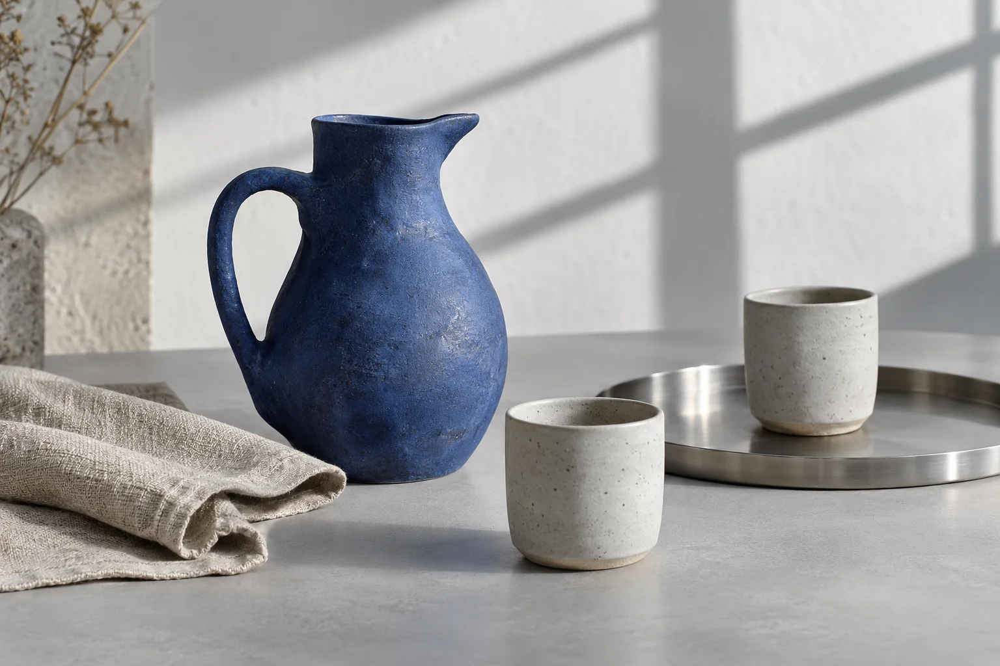
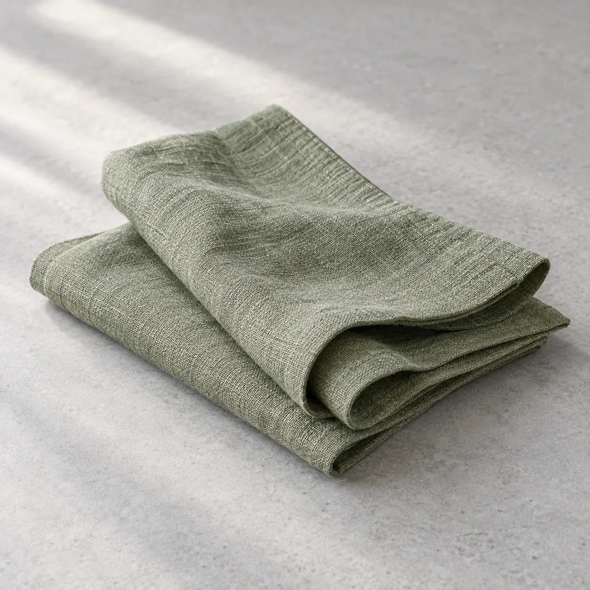
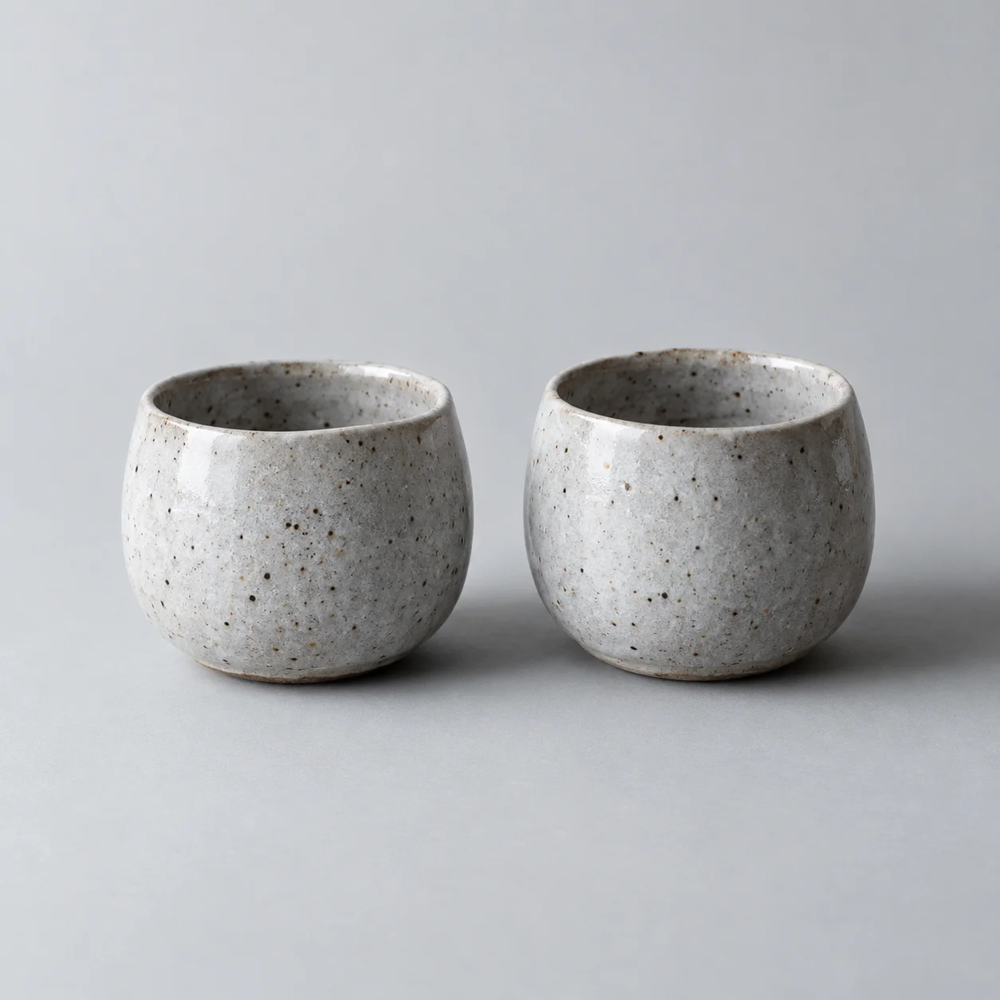

Good things, used often
The art of everyday.
For the first coffee, the long lunch, and everything in between.
Find your everyday favourite
Not for the special occasion.
For the occasion of being home.
The everyday collection
Small things.
Considered well.
Find a place for a new favourite.
Sort: Featured

Leave room
for the little things.
A soft fold. A generous curve. The cup you always reach for. Common Form is an exploration of objects that make a space feel like yours.
Your table,
together.
One pitcher, two cups and a pair of linen napkins. Explore the complete setting in a single bag.
Three sample selections. Free demo delivery.

A few useful details.
How does this concept work?
Explore fictional products, choose a size, edit your bag and complete a local checkout demonstration. No actual order is placed and no payment or personal information is collected.
What about delivery and returns?
The demo uses sample delivery of $8, or $0 for bags of $100 or more. These are interface examples, not shipping or return policies for a real business. There is no real inventory or tax calculation.
Are these real products?
No. Common Form is a fictional brand and all photographs are original AI-generated product concepts. Descriptions, sizes and USD prices are illustrative. No material, manufacturing or sustainability claims have been verified.
What is saved on my device?
Your demo bag and appearance preference stay in this browser when storage is available. You can clear the bag at any time. No data is sent to a shop, Shopify or a payment service.